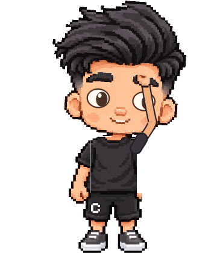
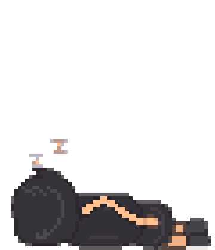

hello, world.01 / A LITTLE PERSONALITY
Made to hang out.
Click for a high-five, hold to pick him up, or choose a mood. Vynn can walk, look around, stretch, dance and explore detected surfaces.
A SMALL FRIEND. A SOFTER WORKDAY.
Meet Vynn. A curious pixel companion who brings a little play to your screen — and reminds you to look after yourself along the way.
Windows 64-bit · About 31 MB · No Python installation
The app currently speaks Vietnamese. English control guide ↗
MORE THAN A LITTLE PIXEL FACE
A high-five between tasks. A stretch after a long session. Vynn makes room for the little things.

hello, world.01 / A LITTLE PERSONALITY
Click for a high-five, hold to pick him up, or choose a mood. Vynn can walk, look around, stretch, dance and explore detected surfaces.
02 / A GENTLE REMINDER
Set reminders for water, eye rest and stretching. Try a 25-minute focus session followed by a 5-minute break, or a timed meditation.

even pixels need rest.03 / YOUR OWN RHYTHM
Pick a size, adjust movement, edit dialogue or let Vynn nap. Open settings from the system tray whenever you want to change things.
Save the Windows EXE in a folder of your choice. Open it and allow a few seconds for startup.
Click for a high-five. Hold the left mouse button for about 0.2 seconds, then drag to move Vynn.
Right-click Vynn for actions. Click the tray icon near the Windows clock to set reminders and preferences.
GOOD TO KNOW
The current application interface is Vietnamese. The English guide includes a translation of the main controls to help you get started.
No. The downloadable Windows executable includes its runtime and resources. Its first launch may take a few seconds while files are extracted.
Vynn looks for reachable surfaces using window and UI information. Detection varies between applications, so some objects cannot be climbed. This is a work in progress.
Click the Vynn icon in the system tray beside the clock. You may need to open the hidden-icons area. Closing the settings window keeps Vynn running; choose “Thoát Vynn Notify” to quit.
Preferences and character state are stored in %APPDATA%\Vynn Notify. Quit Vynn before replacing the EXE when updating. Reminders follow timers you choose; they do not monitor your health.
Found a bug? Have an idea? Share your feedback, tell a friend,
or leave a star if Vynn made you smile.